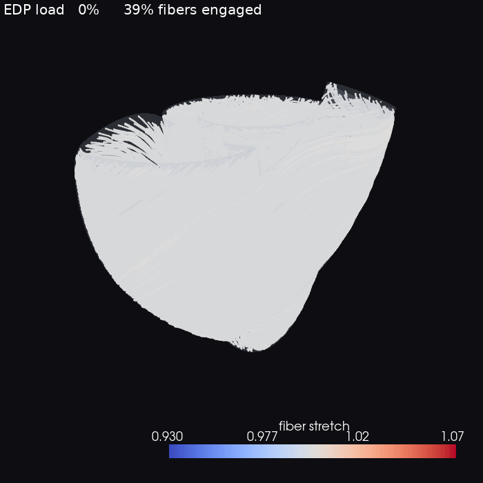
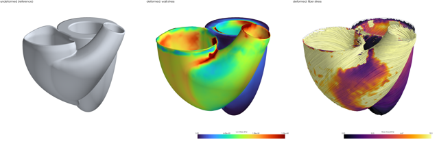
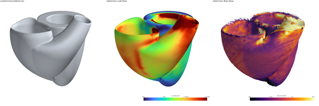
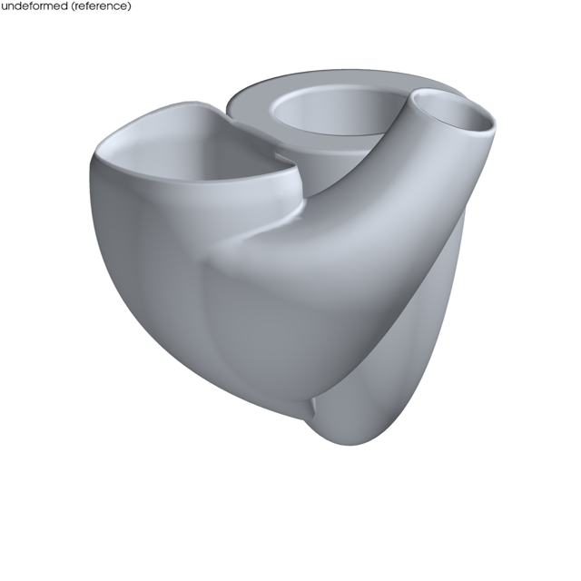
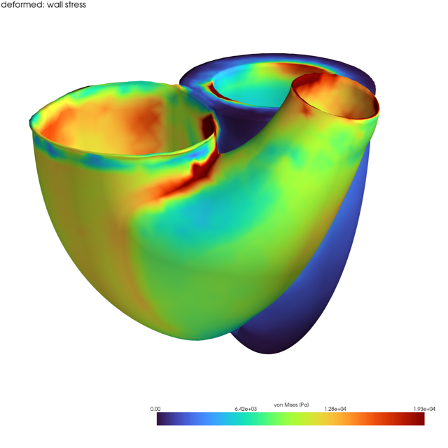
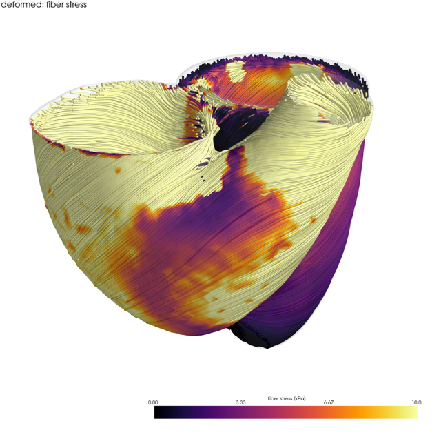
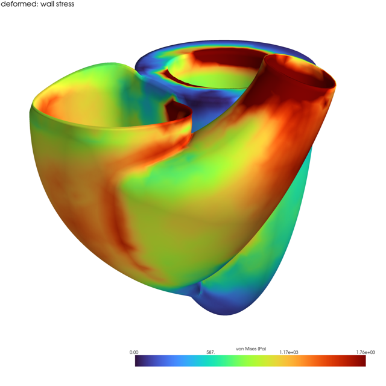
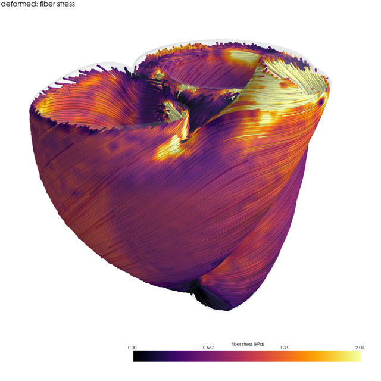

Streamline fibers colored by stretch λf at end-diastole. Click to open the rotatable 3D viewer.

Streamline fibers colored by the load they carry, σf. Click for the 3D viewer.

Wall + fibers deform together under rising EDP; fibers sweep blue→red as they cross λf=1 (tension-only Holzapfel-Ogden). Clamped base, full end-diastole.
{kind=link}

Same engagement, with the distributed pericardial spring base (no clamp). Partial load (~26% EDP, run stopped early).
{kind=link}

Undeformed reference | deformed wall von Mises | deformed fiber stress. Shared scale (reference smaller -> inflation visible). Clamped base, full end-diastole.
{kind=link}

Same triptych with the distributed pericardial spring base (no clamp), ~26% EDP.
{kind=link}

Unloaded BiV reference geometry.
{kind=link}

Deformed wall, smooth SPR von Mises. Clamped base, full EDP.
{kind=link}

Fiber-stress streamlines in the deformed configuration, wall transparent. Clamp, full EDP.
{kind=link}

Deformed wall von Mises with the pericardial spring base (no clamp), ~26% EDP.
{kind=link}

Fiber-stress streamlines, pericardial base, ~26% EDP.